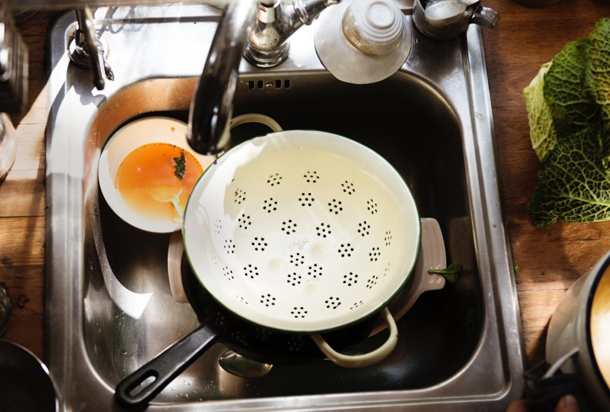

Wie zegt dat besparen niet leuk kan zijn heeft het mis! Je zou denken dat met de hand afwassen je meer geld bespaard maar dat blijkt niet het geval te zijn. Over het algemeen kunt u het beste een vaatwassen gebruiken in plaats van met de hand afwassen. We verspillen onnodig veel kostbare tijd, water en energie aan de afwas terwijl een vaatwasser dit veel zuiniger kan.
Als je alleenstaande bent is het natuurlijk logisch dat met de hand afwassen in de meeste gevallen veel zuiniger is als met een vaatwasser. Maar als u zoveel borden vuil maakt dat u elke keer een vaatwasser goed zou kunnen vullen, dan is het uiteraard beter een vaatwasser te nemen. Waarom? Dat leest u hier.
Hoe doet u de afwas?
Allereerst heeft de mate van uw verbruik het meeste te maken met hoe u daadwerkelijk de afwas doet. Als u afwast met een lopende kraan is het natuurlijk vanzelfsprekend dat u onnodig veel water verbruikt. Het is dus zuiniger om in een teiltje afwassen. Ook het feit of u de afwas elke keer opspaart is van invloed op hoeveel water u verbruikt. Als u keer op keer kleine hoeveelheden afwast doet dan moet u steeds de juiste temperatuur water blijven zoeken en ga zo maar door. Tijdens dit soort processen wordt er echt onnodig veel water verbruikt, er zijn natuurlijk wel speciale kranen die u kunt kopen waarbij u de warmte van het water meteen kunt regelen maar dat zal in elk geval niet nodig zijn omdat wij gaan uitleggen waarom de vaatwasser veel beter en zuiniger is.
Afwasmiddel
Afwasmiddel is een belangrijk punt als het gaat om besparen, zoals bij bijna elk product is er een goedkope en dure versie, dit is ook het geval bij afwasmiddel. Over het algemeen zijn de duurdere afwasmiddelen veel beter en duurzamer, neem bijvoorbeeld Dreft van wie we altijd horen: “Wast een berg en kost een beetje”, nou ja “Kost een beetje?” In de schappen is Dreft wel duurder dan de meeste andere merken, maar met Dreft kunt u zoveel wassen dat u het geld makkelijk terugverdiend heeft.
Een noodzaak is dan ook om niet te veel afwasmiddel te gebruikt wat op zich voor zichzelf spreekt want veel afwasmiddel gebruiken is nergens voor nodig. Per keer heeft u maar enkele druppels nodig, in tegenstelling tot de goedkopere merken waarbij u vaker een redelijke “kneep” uit moet halen om hetzelfde te krijgen. Ook is het natuurlijk beter voor het milieu als u minder flessen weg moet gooien, dat is natuurlijk een bijzaak met het is leuk meegenomen.
Waarom een vaatwasser?
Het gebruik van een vaatwasser kan enorm veel voordelen met zich mee brengen, al denken mensen vaak het tegenovergestelde, afwassen met de vaatwasser is namelijk veel zuiniger. Over het algemeen nemen machines het over en zijn ze veel efficiënter dan wij en in dit geval kunnen wij hier goed gebruik van maken aangezien we bijna allemaal een hekel hebben aan de afwas doen en we een reden hebben om de vaatwasser te gebruiken.
De efficiëntie van een vaatwasser is dat deze is ingesteld om de juiste hoeveelheden water, wasmiddel, warmte, en ga zo maar door te gebruiken. De vaatwasser bespaart het meeste als deze goed gevuld is, u kunt dus gerust een tijdje de afwas opsparen (niet te lang natuurlijk, dat zou niet heel hygiënisch zijn).
Wat ik net al schreef is dat u goed moet opletten dat de vaatwasser goed gevuld is, ga dus niet wassen met een paar bordjes maar vul de vaatwasser zo goed als maar kan. Ook hoeft u uw afwas niet af te spoelen, maar is het wel verstandig om de grovere etensresten te verwijderen aangezien het filter hierdoor vol kan lopen. Zorg er ook voor dat u het juiste afwas programma instelt. Voor de zware afwas het grove geschut, en voor de licht vuile afwas de spaarstand of een lagere temperatuur.
Pannen en potten
De pannen, potten en dergelijke kunt u makkelijk in een vaatwasser doen. Dit is mooi aangezien dat een vervelend en zeer tijdrovende karweitje is om met te hand te doen en dan maar te zwijgen over de verspilling van water bij het wassen van met name (grote) pannen. Zorg er wel voor dat u de grofste resten verwijdert zijn voordat u pannen en/of potten in de vaatwasser stopt.
Belangrijk om te onthouden
Natuurlijk wilt u het liefst dat uw vaatwasser zo lang mogelijk efficiënt blijft. Als u uw vaatwasser niet onderhoudt, dan wordt deze steeds inefficiënter. Probeer dit zo veel mogelijk te voorkomen door:
- Nadat u de afwas eruit haalt kijken of er nog resten zijn achtergebleven, zo ja deze verwijderen.
- Het filter op tijd te reinigen i.v.m. verstoppingen.
- Bekijk zo nu en dan of de sproeiarmen niet verstopt zijn geraakt.
- Zo’n 2 keer per jaar zult u uw vaatwasser moeten ontkalken.
Door met beleid af te wassen, en water niet onnodig te verspillen bespaart u vanzelf op geld en milieu. Met alle apparaten, dus ook de vaatwassers geldt over het algemeen: hoe nieuwer hoe zuiniger. En met een van de nieuwere vaatwassers hoeft u nooit meer zelf af te wassen.